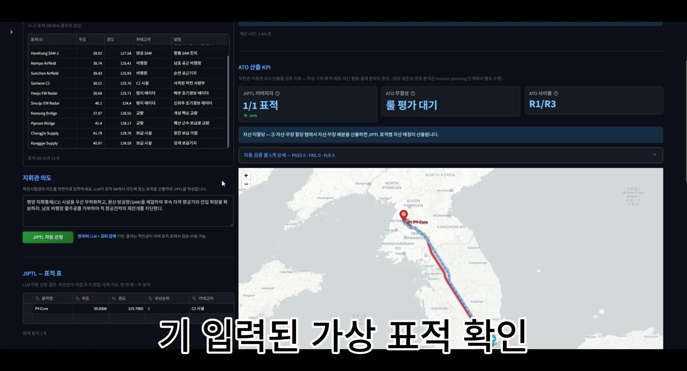
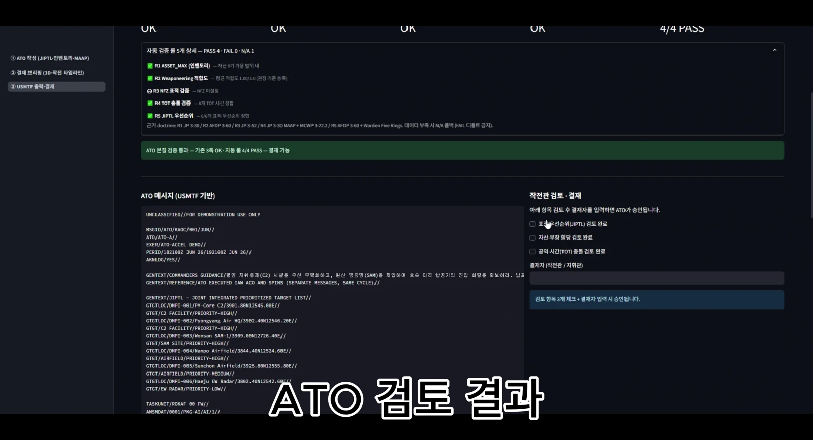

RESEARCH / 03
AI 기반 항공임무 계획
항공임무 계획을 지원하는 두 프로토타입을 소개합니다. IMPS는 계획과 비행 시뮬레이션을, ATO-ACCEL은 항공임무명령서의 생성·검증·브리핑 흐름을 다룹니다.
시스템 흐름도
임무 요구를 계획과 검토, 시각화로 연결하는 연구입니다.
- 임무 요구 입력
계획 수립에 필요한 조건 정리
- 계획 수립 지원
임무계획과 명령서 작성 지원
- 결과 검토
계획과 출력 결과 확인
- 시각화·브리핑
시연 화면으로 결과 전달
IMPS · 계획에서 비행까지
시연의 관찰 포인트는 화면 사이의 연결입니다. 임무계획 화면의 경로를 확인하고, 타임라인에서 시간별 진행을 살펴본 뒤, 3D 시뮬레이션에서 비행 모습을 확인할 수 있습니다.
발표용 원본 「IMPS 영상.mp4」를 웹 재생용으로 변환했습니다. 메인 미리보기는 원본의 일부 구간이며, 여기에서는 전체 영상을 볼 수 있습니다.
ATO-ACCEL · 명령서 작성에서 검증과 브리핑까지
항공임무명령서(ATO)의 기획·분석·브리핑 과정을 지원하는 프로토타입입니다. 발표자료에서는 입력 → 생성 → 분석 → 시각화 → 브리핑의 흐름으로 소개합니다. 아래는 원본 시연에서 추출한 실제 시스템 화면입니다.


ATO-ACCEL 원본 시연 영상과 발표자료를 사용했습니다. 화면 속 시나리오와 수치는 시연 사례이며 실제 작전 성과를 나타내지 않습니다.
관련 논문·발표
투고 원고 · 공개 브리핑
유무인 복합운용 임무계획 시뮬레이션의 교차모듈 정합성 점검
김도윤, 윤동원, 민정기